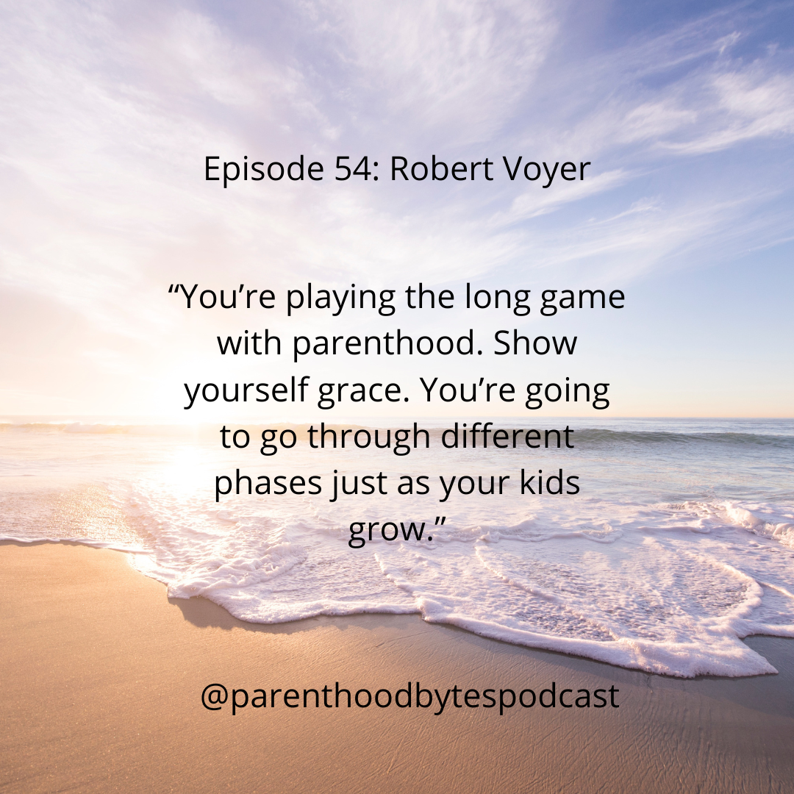

Episode 54: Robert Voyer

Episode Notes
In this episode, we chat with Robert Voyer, a Senior Engineering Manager at Tyler Technologies and a father of two kids aged 10 and 12. Robert shares his experiences raising children in today’s fast-paced world, discussing his approach to navigating the pandemic and the decision to give his kids cell phones. He highlights the importance of focus in our distraction-filled lives, recommending Deep Work, to help listeners cultivate better concentration. Emphasizing the long game in parenting, Robert encourages parents to show themselves grace as they learn and grow alongside their children. Tune in for valuable insights and heartfelt advice on modern parenting!